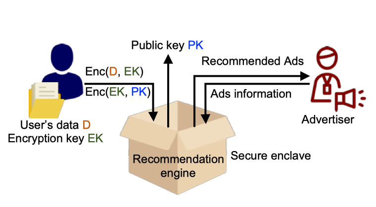
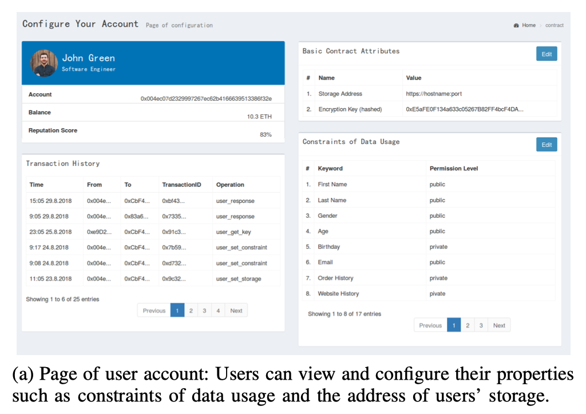
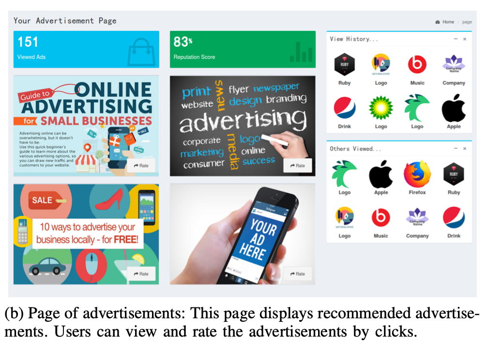

Decentralized Privacy-Preserving Advertisement System
Abstract
Online advertising has been playing a crucial role in the Internet economy. However, the current centralized advertising framework faces several challenges including user-privacy leakage and transaction manipulation. In this work, we propose a decentralized advertisement system, aiming to provide transparent, consistent, and privacy-preserving online advertising services for participants in the advertising value chain.
System Design
System Components
- User contract
- public: address of data, constraints (like payment or privacy requirements)
- private: data decryption key
- Advertiser contract:
- public: corresponding attributes to user's constraints
- target_audience: (default) all users
- AdSet: ad candidates
- daily budget
- duration (start time, end time)
- a group of ads
- Ad: title, description, link, images
- Publisher contract:
- an auction mechanism to find the winners which can be served on the app
- an recommendation system for winners to mine attributes from user's data for accurate targeting
Workflow
- Preparation: Contracts initialization, key generation.
- Data exchange: Advertisers request user's information. If information requested are privacy, advertiser can only access data after user authorizes advertiser (by sending encryption key).
- Bidding for ad plots: User invoke Publisher contract to start up an auction for ads plots. Advertisers who are interested bid for the ad plot within bidding contract's lifetime. Publisher get winners of the bid.
- Recommendation: When user opens a page or launches the app, it sends a signal to trigger ad recommendation. Advertisers (winners in bidding) receive the signal, run their model in secure enclave and publish their decision of ad content.
- Display: Publisher access to the ad content and render it on user's page.
Decentralization
- Decentralized user-data management: In this system, no central entity collects the users' data. Instead, each user keeps his own data, which can be encrypted, and decides under what condition and with which advertiser to provide his data safely through a smart contract called data manager contract and secure hardware. In this way, the users gain fine-grained control over their data usage, without the concern that their private data may be abused or even resold without their permission.
- Decentralized advertisement bidding: We adopt publisher contracts to handle advertisement bidding process. Each time a publisher provides some advertisement plots, the advertisers can bid for them by sending transactions to a publisher contract, which automatically runs an auction algorithm. The bidding results are recorded on the blockchain and are thus verifiable, and the payment is transferred via blockchain transactions, without the need for a centralized party, making the whole bidding process fair and transparent.
Privacy-preserving Recommendation
Advertiser can get recommendation results without direct access to user's data through the following steps:
- User generates symmetric key
EK_u, encrypts data with it (s = Enc(data, EK_u))
- Advertiser generates asymmetric key
(PK_a, SK_a), publishes the public key PK_a
- If data usage constraints check passes, the user encrypts its key with advertiser's public key,
msg = Enc(EK_u, PK_a)
- Advertiser passes both
msg and s to secure enclave, where decryption and recommendation will run, and gets output (advertisement id)

Demo
 